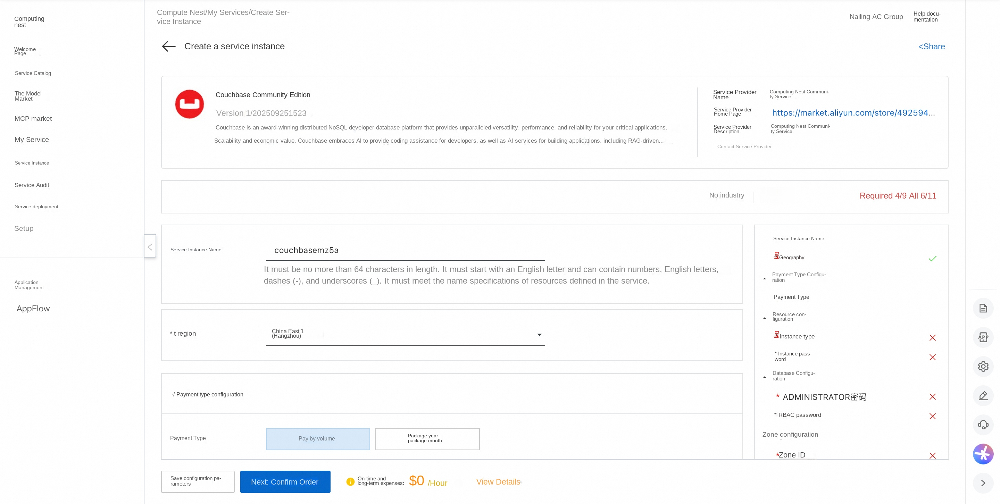
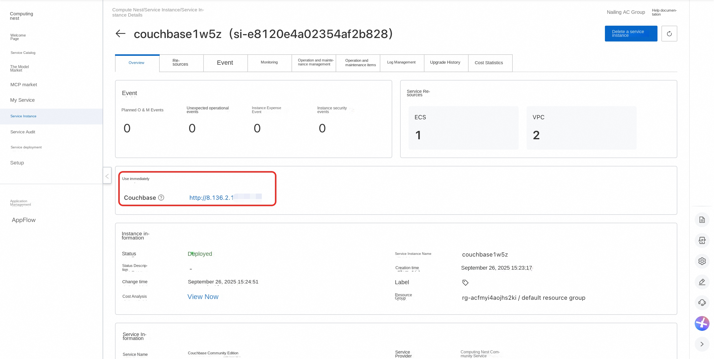

🌟Service Introduction
Couchbase is an award-winning distributed NoSQL developer database platform that delivers unmatched versatility, performance, scalability and economic value for your mission-critical applications. Couchbase embrace AI, providing coding assistance for developers, and AI services for building applications, including RAG-powered agents, real-time analytics, and cloud-to-edge vector search.
💰Billing Description
The cost of Couchbase Community Edition deployment in Computing Nest mainly involves:
-Selected vCPU and memory specifications -System disk type and capacity -public network bandwidth
🚀Deployment Process
-
Visit the Computing Nest Couchbase Community Edition Deployment Link and fill in the deployment parameters as prompted: 
-
After completing the parameters, you can see the corresponding RFQ details. After confirming the parameters, click Next: Confirm Order.
-
Confirm that the order is complete and agree to the service agreement and click Create Now to enter the deployment phase.
-
Wait for the deployment to complete and enter the service instance details page. 
-
Click on the service address and use the Couchbase Community Edition.

📚Guidelines for use
For more use, please refer to the Couchbase official website document.